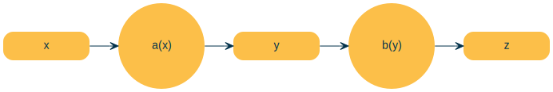

import torchModel Training Loop
Model Training Loop
x = torch.randn(3, requires_grad = True)print(x)tensor([-1.2561, -3.5029, -1.4459], requires_grad=True)y = x + 2
y.retain_grad()z = y * y*2
z.retain_grad()
z = z.mean()
print(z)tensor(2.0794, grad_fn=<MeanBackward0>)z.backward(retain_graph=True)x,y, z(tensor([-1.2561, -3.5029, -1.4459], requires_grad=True),
tensor([ 0.7439, -1.5029, 0.5541], grad_fn=<AddBackward0>),
tensor(2.0794, grad_fn=<MeanBackward0>))x.grad, y.grad(tensor([ 0.9919, -2.0039, 0.7388]), tensor([ 0.9919, -2.0039, 0.7388]))For multiple z values
import torchx = torch.randn(3, requires_grad = True)print(x)tensor([-1.3521, -0.5026, -0.7557], requires_grad=True)y = x + 2
y.retain_grad()z = y * y*2
z.retain_grad()
#z = z.mean()
print(z)tensor([0.8396, 4.4845, 3.0964], grad_fn=<MulBackward0>)v = torch.tensor([0.1, 1.0, 0.001], dtype=torch.float32)
z.backward(v, retain_graph=True)x, y, z(tensor([-1.3521, -0.5026, -0.7557], requires_grad=True),
tensor([0.6479, 1.4974, 1.2443], grad_fn=<AddBackward0>),
tensor([0.8396, 4.4845, 3.0964], grad_fn=<MulBackward0>))x.grad, y.grad(tensor([2.5917e-01, 5.9897e+00, 4.9771e-03]),
tensor([2.5917e-01, 5.9897e+00, 4.9771e-03]))Stopping gradient descent
x.requires_grad_(False)
print(x)tensor([-1.3521, -0.5026, -0.7557])y = x.detach()
print(y)tensor([-1.3521, -0.5026, -0.7557])with torch.no_grad():
print(x)tensor([-1.3521, -0.5026, -0.7557])Zeroing Gradients
weights = torch.ones(4, requires_grad=True)
for epoch in range(5):
model_output = (weights * 3).sum()
model_output.backward()
print(weights.grad)tensor([3., 3., 3., 3.])
tensor([6., 6., 6., 6.])
tensor([9., 9., 9., 9.])
tensor([12., 12., 12., 12.])
tensor([15., 15., 15., 15.])weights = torch.ones(4, requires_grad=True)
for epoch in range(5):
model_output = (weights * 3).sum()
model_output.backward()
print(weights.grad)
weights.grad.zero_()tensor([3., 3., 3., 3.])
tensor([3., 3., 3., 3.])
tensor([3., 3., 3., 3.])
tensor([3., 3., 3., 3.])
tensor([3., 3., 3., 3.])Backpropagation
weights = torch.ones(4, requires_grad=True)pip list| grep nbdevAutonbdevAuto 0.0.130 /home/ben/BENEDICT_Only/Benedict_Projects/Benedict_ML/nbdevAuto
Note: you may need to restart the kernel to use updated packages.from graphviz import Digraph
from nbdevAuto import functionsdot = functions.graph()
# Add nodes with different shapes and formatting
dot.node('x', 'x')
dot.node('a', 'a(x)', shape='circle')
dot.node('y', 'y')
dot.node('b', 'b(y)', shape='circle')
dot.node('z', 'z')
# Add edges with custom labels and formatting
dot.edge('x', 'a')
dot.edge('a', 'y')
dot.edge('y', 'b')
dot.edge('b', 'z')
# Render the graph
dot
Chain rule
\(\dfrac{\delta z}{\delta x} = \dfrac{\delta z}{\delta y} \cdot \dfrac{\delta y}{\delta x}\)
Computational Graph
dot = functions.graph()
# Add nodes with different shapes and formatting
dot.node('x', 'x')
dot.node('*', 'f=x*y', shape='circle')
dot.node('y', 'y')
dot.node('z', 'z')
# Add edges with custom labels and formatting
dot.edge('x', '*')
dot.edge('y', '*')
dot.edge('*', 'z')
# Render the graph
dot\(\dfrac{\delta z}{\delta x} = \dfrac{\delta xy}{\delta x} = y\)
\(\dfrac{\delta z}{\delta y} = \dfrac{\delta xy}{\delta y} = y\)
$ = $
- Forward pass: Computer loss
- Compute local gradients
- Backward pass: Compute dLoss/dWeights using the Chain Rule
dot = functions.graph()
# Add nodes with different shapes and formatting
dot.node('x', 'x')
dot.node('w', 'w')
dot.node('*', '*\ny1=w*y', shape='circle')
dot.node('y', 'y')
dot.node('-', '-\ns= y1-y')
dot.node('^2', '^2\n(y1-y)^2')
dot.node('Loss', 'Loss')
# Add edges with custom labels and formatting
dot.edge('x', '*')
dot.edge('w', '*')
dot.edge('*', '-', label='y1')
dot.edge('y', '-')
dot.edge('-', '^2', label='s')
dot.edge('^2', 'Loss')
# Render the graph
dot\(Loss = (\hat{y} - y)^2\)
\(\dfrac{\delta loss}{\delta s} = \dfrac{s^2}{s} = 2s\)
\(\dfrac{\delta s}{\delta \hat{y}} = \dfrac{\delta\hat{y} - y}{\delta \hat{y}} = 1\)
\(\dfrac{\delta \hat{y}}{\delta w} = \dfrac{\delta wx}{\delta w} = x\)
\(\therefore \dfrac{\delta loss}{\delta w} = \dfrac{\delta loss}{\delta s} \cdot \dfrac{\delta s}{\delta y} \cdot \dfrac{\delta \hat{y}}{\delta w} = 2 \cdot s \cdot x = 2 \cdot (-1) \cdot (1) = -2\)
x = 1
y = 2
w = 1
y1 = x * w
s = y1-y
loss = s**2print(f'x:{x} w:{w} y1:{y1} y:{y} s:{s} loss:{loss}')x:1 w:1 y1:1 y:2 s:-1 loss:1import torch
x = torch.tensor(1.0)
y = torch.tensor(2.0)w = torch.tensor(1.0, requires_grad = True)
lr = 0.005#forward pass and compute the loss
y1 = w * x
loss = (y1-y)**2
print(y1)
print(loss)tensor(1., grad_fn=<MulBackward0>)
tensor(1., grad_fn=<PowBackward0>)# backward pass
loss.backward()
print(w.grad)
w.grad.zero_()tensor(-2.)tensor(0.)Gradient Descent
Numpy
Prediction: Manually
Gradients Computation: Manually
Loss Computation: Manually
Parameter updates: Manually
import numpy as npx = np.array([1,2,3,4], dtype=np.float32)
y = np.array([2,4,6,8], dtype=np.float32)
w = 0.0# model
def forward(x):
return w * x
def loss(y, y_predicted):
return ((y_predicted - y)**2).mean()# gradient
# MSE = 1/N * (w*x - y)**2
# dJ/dw = 1/N 2x (w*x - y)
def gradient (x, y, y_predicted):
return np.dot(2 * x, y_predicted-y).mean()
print(f'Prediction before training: f(5) = {forward(5):.3f}')Prediction before training: f(5) = 0.000learning_rate = 0.01
n_iters = 15
for epoch in range(n_iters):
# prediction = forward pass
y_pred = forward(x)
# loss
l = loss(y, y_pred)
# gradients
dw = gradient(x, y, y_pred)
# update weights
w -= learning_rate * dw
if epoch % 1 == 0:
print(f'epoc:{epoch} w = {w:.3f} , y_pred={forward(5)}, y = {10}, loss = {l:.8f}, dw = {dw}')
print(f'Prediction after training: {forward(5):.3f}, y = {10}')epoc:0 w = 1.200 , y_pred=6.0, y = 10, loss = 30.00000000, dw = -120.0
epoc:1 w = 1.680 , y_pred=8.399999809265136, y = 10, loss = 4.79999924, dw = -47.999996185302734
epoc:2 w = 1.872 , y_pred=9.35999994277954, y = 10, loss = 0.76800019, dw = -19.200002670288086
epoc:3 w = 1.949 , y_pred=9.743999934196472, y = 10, loss = 0.12288000, dw = -7.679999828338623
epoc:4 w = 1.980 , y_pred=9.897600066661834, y = 10, loss = 0.01966083, dw = -3.072002649307251
epoc:5 w = 1.992 , y_pred=9.95904014110565, y = 10, loss = 0.00314574, dw = -1.2288014888763428
epoc:6 w = 1.997 , y_pred=9.983615934848784, y = 10, loss = 0.00050331, dw = -0.4915158748626709
epoc:7 w = 1.999 , y_pred=9.993446409702301, y = 10, loss = 0.00008053, dw = -0.1966094970703125
epoc:8 w = 1.999 , y_pred=9.997378492355345, y = 10, loss = 0.00001288, dw = -0.07864165306091309
epoc:9 w = 2.000 , y_pred=9.998951268196105, y = 10, loss = 0.00000206, dw = -0.03145551681518555
epoc:10 w = 2.000 , y_pred=9.999580299854276, y = 10, loss = 0.00000033, dw = -0.012580633163452148
epoc:11 w = 2.000 , y_pred=9.999832069873808, y = 10, loss = 0.00000005, dw = -0.005035400390625
epoc:12 w = 2.000 , y_pred=9.999932992458342, y = 10, loss = 0.00000001, dw = -0.002018451690673828
epoc:13 w = 2.000 , y_pred=9.999973046779632, y = 10, loss = 0.00000000, dw = -0.00080108642578125
epoc:14 w = 2.000 , y_pred=9.999989175796507, y = 10, loss = 0.00000000, dw = -0.00032258033752441406
Prediction after training: 10.000, y = 10Torch
Prediction: Manually
Gradients Computation: Autograd
Loss Computation: Manually
Parameter updates: Manually
x = torch.tensor([1,2,3,4], dtype=torch.float32)
y = torch.tensor([2,4,6,8], dtype=torch.float32)
w = torch.tensor([0.0], dtype=torch.float32, requires_grad=True)# model
def forward(x):
return w * x
def loss(y, y_predicted):
return ((y_predicted - y)**2).mean()# gradient
# MSE = 1/N * (w*x - y)**2
# dJ/dw = 1/N 2x (w*x - y)
print(f'Prediction before training: f(5) = {forward(5)}')Prediction before training: f(5) = tensor([0.], grad_fn=<MulBackward0>)learning_rate = 0.01
n_iters = 50
for epoch in range(n_iters):
# prediction = forward pass
y_pred = forward(x)
# loss
l = loss(y, y_pred)
# gradients
l.backward()
# update weights
with torch.no_grad():
w -= learning_rate * w.grad
if epoch % 2 == 0:
print(f'epoc:{epoch} w = {w.item():.3f}, y_pred={forward(5).item():.3f}, y = {10}, loss = {l.item():.7f}, dw = {w.grad.item():.7f}')
w.grad.zero_()
print(f'Prediction after training: {forward(5)}, y = {10}')epoc:0 w = 0.300, y_pred=1.500, y = 10, loss = 30.0000000, dw = -30.0000000
epoc:2 w = 0.772, y_pred=3.859, y = 10, loss = 15.6601877, dw = -21.6749992
epoc:4 w = 1.113, y_pred=5.563, y = 10, loss = 8.1747169, dw = -15.6601877
epoc:6 w = 1.359, y_pred=6.794, y = 10, loss = 4.2672529, dw = -11.3144855
epoc:8 w = 1.537, y_pred=7.684, y = 10, loss = 2.2275321, dw = -8.1747150
epoc:10 w = 1.665, y_pred=8.327, y = 10, loss = 1.1627856, dw = -5.9062314
epoc:12 w = 1.758, y_pred=8.791, y = 10, loss = 0.6069812, dw = -4.2672515
epoc:14 w = 1.825, y_pred=9.126, y = 10, loss = 0.3168478, dw = -3.0830884
epoc:16 w = 1.874, y_pred=9.369, y = 10, loss = 0.1653965, dw = -2.2275314
epoc:18 w = 1.909, y_pred=9.544, y = 10, loss = 0.0863381, dw = -1.6093917
epoc:20 w = 1.934, y_pred=9.671, y = 10, loss = 0.0450689, dw = -1.1627841
epoc:22 w = 1.952, y_pred=9.762, y = 10, loss = 0.0235263, dw = -0.8401127
epoc:24 w = 1.966, y_pred=9.828, y = 10, loss = 0.0122808, dw = -0.6069803
epoc:26 w = 1.975, y_pred=9.876, y = 10, loss = 0.0064107, dw = -0.4385428
epoc:28 w = 1.982, y_pred=9.910, y = 10, loss = 0.0033464, dw = -0.3168479
epoc:30 w = 1.987, y_pred=9.935, y = 10, loss = 0.0017469, dw = -0.2289228
epoc:32 w = 1.991, y_pred=9.953, y = 10, loss = 0.0009119, dw = -0.1653977
epoc:34 w = 1.993, y_pred=9.966, y = 10, loss = 0.0004760, dw = -0.1194997
epoc:36 w = 1.995, y_pred=9.976, y = 10, loss = 0.0002485, dw = -0.0863385
epoc:38 w = 1.996, y_pred=9.982, y = 10, loss = 0.0001297, dw = -0.0623794
epoc:40 w = 1.997, y_pred=9.987, y = 10, loss = 0.0000677, dw = -0.0450683
epoc:42 w = 1.998, y_pred=9.991, y = 10, loss = 0.0000353, dw = -0.0325624
epoc:44 w = 1.999, y_pred=9.993, y = 10, loss = 0.0000184, dw = -0.0235248
epoc:46 w = 1.999, y_pred=9.995, y = 10, loss = 0.0000096, dw = -0.0169984
epoc:48 w = 1.999, y_pred=9.997, y = 10, loss = 0.0000050, dw = -0.0122809
Prediction after training: tensor([9.9970], grad_fn=<MulBackward0>), y = 10Pytorch Loss and Pytorch Optimizer
Prediction: Manually
Gradients Computation: Autograd
Loss Computation: Pytorch Loss
Parameter updates: Pytorch Optimizer
- Design Model = (input, output, size, forward pass)
- Construct loss and optimizer
- Training loop
- forward pass: compute prediction
- backward pass: gradients
- update weights
import torch
import torch.nn as nn
x = torch.tensor([1,2,3,4], dtype=torch.float32)
y = torch.tensor([2,4,6,8], dtype=torch.float32)
w = torch.tensor([0.0], dtype=torch.float32, requires_grad=True)# model
def forward(x):
return w * xprint(f'Prediction before training: f(5) = {forward(5)}')Prediction before training: f(5) = tensor([0.], grad_fn=<MulBackward0>)learning_rate = 0.01
n_iters = 50
loss = nn.MSELoss()
optimizer = torch.optim.SGD([w], lr= learning_rate)
for epoch in range(n_iters):
# prediction = forward pass
y_pred = forward(x)
# loss
l = loss(y, y_pred)
# gradients
l.backward()
optimizer.step()
if epoch % 2 == 0:
print(f'epoc:{epoch} w = {w.item():.3f}, y_pred={forward(5).item():.3f}, y = {10}, loss = {l.item():.7f}, dw = {w.grad.item():.7f}')
optimizer.zero_grad()
print(f'Prediction after training: {forward(5)}, y = {10}')epoc:0 w = 0.300, y_pred=1.500, y = 10, loss = 30.0000000, dw = -30.0000000
epoc:2 w = 0.772, y_pred=3.859, y = 10, loss = 15.6601877, dw = -21.6749992
epoc:4 w = 1.113, y_pred=5.563, y = 10, loss = 8.1747169, dw = -15.6601877
epoc:6 w = 1.359, y_pred=6.794, y = 10, loss = 4.2672529, dw = -11.3144855
epoc:8 w = 1.537, y_pred=7.684, y = 10, loss = 2.2275321, dw = -8.1747150
epoc:10 w = 1.665, y_pred=8.327, y = 10, loss = 1.1627856, dw = -5.9062314
epoc:12 w = 1.758, y_pred=8.791, y = 10, loss = 0.6069812, dw = -4.2672515
epoc:14 w = 1.825, y_pred=9.126, y = 10, loss = 0.3168478, dw = -3.0830884
epoc:16 w = 1.874, y_pred=9.369, y = 10, loss = 0.1653965, dw = -2.2275314
epoc:18 w = 1.909, y_pred=9.544, y = 10, loss = 0.0863381, dw = -1.6093917
epoc:20 w = 1.934, y_pred=9.671, y = 10, loss = 0.0450689, dw = -1.1627841
epoc:22 w = 1.952, y_pred=9.762, y = 10, loss = 0.0235263, dw = -0.8401127
epoc:24 w = 1.966, y_pred=9.828, y = 10, loss = 0.0122808, dw = -0.6069803
epoc:26 w = 1.975, y_pred=9.876, y = 10, loss = 0.0064107, dw = -0.4385428
epoc:28 w = 1.982, y_pred=9.910, y = 10, loss = 0.0033464, dw = -0.3168479
epoc:30 w = 1.987, y_pred=9.935, y = 10, loss = 0.0017469, dw = -0.2289228
epoc:32 w = 1.991, y_pred=9.953, y = 10, loss = 0.0009119, dw = -0.1653977
epoc:34 w = 1.993, y_pred=9.966, y = 10, loss = 0.0004760, dw = -0.1194997
epoc:36 w = 1.995, y_pred=9.976, y = 10, loss = 0.0002485, dw = -0.0863385
epoc:38 w = 1.996, y_pred=9.982, y = 10, loss = 0.0001297, dw = -0.0623794
epoc:40 w = 1.997, y_pred=9.987, y = 10, loss = 0.0000677, dw = -0.0450683
epoc:42 w = 1.998, y_pred=9.991, y = 10, loss = 0.0000353, dw = -0.0325624
epoc:44 w = 1.999, y_pred=9.993, y = 10, loss = 0.0000184, dw = -0.0235248
epoc:46 w = 1.999, y_pred=9.995, y = 10, loss = 0.0000096, dw = -0.0169984
epoc:48 w = 1.999, y_pred=9.997, y = 10, loss = 0.0000050, dw = -0.0122809
Prediction after training: tensor([9.9970], grad_fn=<MulBackward0>), y = 10Pytorch Automate
Prediction: Manually
Gradients Computation: Autograd
Loss Computation: Pytorch Loss
Parameter updates: Pytorch Optimizer
import torch
import torch.nn as nn
x = torch.tensor([[1],[2],[3],[4]], dtype=torch.float32)
y = torch.tensor([[2],[4],[6],[8]], dtype=torch.float32)
x_test = torch.tensor([5], dtype = torch.float32)
n_samples, n_features = x.shape
n_samples, n_features(4, 1)model = nn.Linear(in_features = n_features, out_features = 1)
modelLinear(in_features=1, out_features=1, bias=True)[w,b] = model.parameters()
w[0].item()-0.8376840353012085model.state_dict()['weight']tensor([[-0.8377]])print(f'Prediction before training: f(5) = {model(x_test)}')Prediction before training: f(5) = tensor([-3.8722], grad_fn=<ViewBackward0>)learning_rate = 0.1
n_iters = 500
loss = nn.MSELoss()
optimizer = torch.optim.SGD(model.parameters(), lr= learning_rate)
for epoch in range(n_iters):
# prediction = forward pass
y_pred = model(x)
# loss
l = loss(y, y_pred)
# gradients
l.backward()
optimizer.step()
if epoch % 20 == 0:
[w,b] = model.parameters()
print(f'epoc:{epoch} w = {w[0].item():.3f} {b[0].item():.3f}, y_pred={model(x_test).item():.3f}, y = {10}, loss = {l.item():.7f}, dw = {w.grad.item():.7f}')
optimizer.zero_grad()
print(f'Prediction after training: {model(x_test)}, y = {10}')epoc:0 w = 3.261 1.672, y_pred=17.975, y = 10, loss = 56.0067291, dw = -40.9841690
epoc:20 w = 1.794 0.607, y_pred=9.578, y = 10, loss = 0.0653165, dw = -0.0772833
epoc:40 w = 1.888 0.330, y_pred=9.769, y = 10, loss = 0.0193617, dw = -0.0346756
epoc:60 w = 1.939 0.180, y_pred=9.874, y = 10, loss = 0.0057399, dw = -0.0188781
epoc:80 w = 1.967 0.098, y_pred=9.931, y = 10, loss = 0.0017016, dw = -0.0102807
epoc:100 w = 1.982 0.053, y_pred=9.963, y = 10, loss = 0.0005045, dw = -0.0055964
epoc:120 w = 1.990 0.029, y_pred=9.980, y = 10, loss = 0.0001496, dw = -0.0030484
epoc:140 w = 1.995 0.016, y_pred=9.989, y = 10, loss = 0.0000443, dw = -0.0016569
epoc:160 w = 1.997 0.009, y_pred=9.994, y = 10, loss = 0.0000131, dw = -0.0009021
epoc:180 w = 1.998 0.005, y_pred=9.997, y = 10, loss = 0.0000039, dw = -0.0004910
epoc:200 w = 1.999 0.003, y_pred=9.998, y = 10, loss = 0.0000012, dw = -0.0002694
epoc:220 w = 2.000 0.001, y_pred=9.999, y = 10, loss = 0.0000003, dw = -0.0001463
epoc:240 w = 2.000 0.001, y_pred=9.999, y = 10, loss = 0.0000001, dw = -0.0000764
epoc:260 w = 2.000 0.000, y_pred=10.000, y = 10, loss = 0.0000000, dw = -0.0000430
epoc:280 w = 2.000 0.000, y_pred=10.000, y = 10, loss = 0.0000000, dw = -0.0000240
epoc:300 w = 2.000 0.000, y_pred=10.000, y = 10, loss = 0.0000000, dw = -0.0000120
epoc:320 w = 2.000 0.000, y_pred=10.000, y = 10, loss = 0.0000000, dw = -0.0000055
epoc:340 w = 2.000 0.000, y_pred=10.000, y = 10, loss = 0.0000000, dw = -0.0000049
epoc:360 w = 2.000 0.000, y_pred=10.000, y = 10, loss = 0.0000000, dw = -0.0000038
epoc:380 w = 2.000 0.000, y_pred=10.000, y = 10, loss = 0.0000000, dw = -0.0000001
epoc:400 w = 2.000 0.000, y_pred=10.000, y = 10, loss = 0.0000000, dw = -0.0000017
epoc:420 w = 2.000 0.000, y_pred=10.000, y = 10, loss = 0.0000000, dw = -0.0000015
epoc:440 w = 2.000 0.000, y_pred=10.000, y = 10, loss = 0.0000000, dw = 0.0000001
epoc:460 w = 2.000 0.000, y_pred=10.000, y = 10, loss = 0.0000000, dw = -0.0000001
epoc:480 w = 2.000 0.000, y_pred=10.000, y = 10, loss = 0.0000000, dw = 0.0000007
Prediction after training: tensor([10.], grad_fn=<ViewBackward0>), y = 10Pytorch Model
Prediction: Manually
Gradients Computation: Autograd
Loss Computation: Pytorch Loss
Parameter updates: Pytorch Optimizer
- Design Model = (input, output, size, forward pass)
- Construct loss and optimizer
- Training loop
- forward pass: compute prediction
- backward pass: gradients
- update weights
import torch
import torch.nn as nn
x = torch.tensor([[1],[2],[3],[4]], dtype=torch.float32)
y = torch.tensor([[2],[4],[6],[8]], dtype=torch.float32)
x_test = torch.tensor([5], dtype = torch.float32)
n_samples, n_features = x.shape
n_samples, n_features(4, 1)model = nn.Linear(in_features = n_features, out_features = 1)
modelLinear(in_features=1, out_features=1, bias=True)class LinearRegression(nn.Module):
def __init__(self, in_features, out_features):
super(LinearRegression, self).__init__()
self.lin = nn.Linear(in_features, out_features)
def forward(self, x):
return self.lin(x)
model = LinearRegression(in_features = n_features, out_features = 1)
modelLinearRegression(
(lin): Linear(in_features=1, out_features=1, bias=True)
)[w,b] = model.parameters()
w[0].item()-0.08443880081176758model.state_dict()['lin.weight']tensor([[-0.0844]])print(f'Prediction before training: f(5) = {model(x_test)}')Prediction before training: f(5) = tensor([-0.1386], grad_fn=<ViewBackward0>)learning_rate = 0.1
n_iters = 500
loss = nn.MSELoss()
optimizer = torch.optim.SGD(model.parameters(), lr= learning_rate)
for epoch in range(n_iters):
# prediction = forward pass
y_pred = model(x)
# loss
l = loss(y, y_pred)
# gradients
l.backward()
optimizer.step()
if epoch % 20 == 0:
[w,b] = model.parameters()
print(f'epoc:{epoch} w = {w[0].item():.3f} {b[0].item():.3f}, y_pred={model(x_test).item():.3f}, y = {10}, loss = {l.item():.7f}, dw = {w.grad.item():.7f}')
optimizer.zero_grad()
print(f'Prediction after training: {model(x_test)}, y = {10}')epoc:0 w = 2.900 1.269, y_pred=15.771, y = 10, loss = 29.7110996, dw = -29.8484650
epoc:20 w = 1.841 0.470, y_pred=9.673, y = 10, loss = 0.0391924, dw = -0.0592351
epoc:40 w = 1.913 0.256, y_pred=9.821, y = 10, loss = 0.0116179, dw = -0.0268617
epoc:60 w = 1.953 0.139, y_pred=9.902, y = 10, loss = 0.0034442, dw = -0.0146208
epoc:80 w = 1.974 0.076, y_pred=9.947, y = 10, loss = 0.0010210, dw = -0.0079615
epoc:100 w = 1.986 0.041, y_pred=9.971, y = 10, loss = 0.0003027, dw = -0.0043370
epoc:120 w = 1.992 0.022, y_pred=9.984, y = 10, loss = 0.0000897, dw = -0.0023587
epoc:140 w = 1.996 0.012, y_pred=9.991, y = 10, loss = 0.0000266, dw = -0.0012866
epoc:160 w = 1.998 0.007, y_pred=9.995, y = 10, loss = 0.0000079, dw = -0.0007011
epoc:180 w = 1.999 0.004, y_pred=9.997, y = 10, loss = 0.0000023, dw = -0.0003816
epoc:200 w = 1.999 0.002, y_pred=9.999, y = 10, loss = 0.0000007, dw = -0.0002074
epoc:220 w = 2.000 0.001, y_pred=9.999, y = 10, loss = 0.0000002, dw = -0.0001137
epoc:240 w = 2.000 0.001, y_pred=10.000, y = 10, loss = 0.0000001, dw = -0.0000589
epoc:260 w = 2.000 0.000, y_pred=10.000, y = 10, loss = 0.0000000, dw = -0.0000327
epoc:280 w = 2.000 0.000, y_pred=10.000, y = 10, loss = 0.0000000, dw = -0.0000174
epoc:300 w = 2.000 0.000, y_pred=10.000, y = 10, loss = 0.0000000, dw = -0.0000103
epoc:320 w = 2.000 0.000, y_pred=10.000, y = 10, loss = 0.0000000, dw = -0.0000072
epoc:340 w = 2.000 0.000, y_pred=10.000, y = 10, loss = 0.0000000, dw = -0.0000017
epoc:360 w = 2.000 0.000, y_pred=10.000, y = 10, loss = 0.0000000, dw = -0.0000023
epoc:380 w = 2.000 0.000, y_pred=10.000, y = 10, loss = 0.0000000, dw = -0.0000023
epoc:400 w = 2.000 0.000, y_pred=10.000, y = 10, loss = 0.0000000, dw = -0.0000010
epoc:420 w = 2.000 0.000, y_pred=10.000, y = 10, loss = 0.0000000, dw = -0.0000023
epoc:440 w = 2.000 0.000, y_pred=10.000, y = 10, loss = 0.0000000, dw = 0.0000000
epoc:460 w = 2.000 0.000, y_pred=10.000, y = 10, loss = 0.0000000, dw = -0.0000007
epoc:480 w = 2.000 0.000, y_pred=10.000, y = 10, loss = 0.0000000, dw = -0.0000015
Prediction after training: tensor([10.0000], grad_fn=<ViewBackward0>), y = 10Linear Regression
import torch
import torch.nn as nn
import numpy as np
from sklearn import datasets
import matplotlib.pyplot as plt- Prepare data
- model
- loss and optimizer
- training loop
x_numpy, y_numpy = datasets.make_regression(n_samples= 100, n_features=1, noise = 20, random_state = 1)x = torch.from_numpy(x_numpy.astype(np.float32))
y = torch.from_numpy(y_numpy.astype(np.float32))
x[:5], y[:5](tensor([[-0.6118],
[-0.2494],
[ 0.4885],
[ 0.7620],
[ 1.5198]]),
tensor([-55.5386, -10.6620, 22.7574, 101.0961, 144.3376]))x_test = x[4]
y_test = y[4]
x_test, y_test(tensor([1.5198]), tensor(144.3376))y =y.view(y.shape[0], 1)
x[:5], y[:5](tensor([[-0.6118],
[-0.2494],
[ 0.4885],
[ 0.7620],
[ 1.5198]]),
tensor([[-55.5386],
[-10.6620],
[ 22.7574],
[101.0961],
[144.3376]]))n_samples, n_features = x.shape
n_samples, n_features(100, 1)#1.model
input_size = n_features
output_size = 1
model = nn.Linear(input_size, output_size)
modelLinear(in_features=1, out_features=1, bias=True)[a,b] = model.parameters()
a,b(Parameter containing:
tensor([[-0.3357]], requires_grad=True),
Parameter containing:
tensor([0.3514], requires_grad=True))#2. loss and optimizer
learning_rate = 0.01
criterion = nn.MSELoss()
optimizer = torch.optim.SGD(model.parameters(), lr= learning_rate)optimizerSGD (
Parameter Group 0
dampening: 0
differentiable: False
foreach: None
lr: 0.01
maximize: False
momentum: 0
nesterov: False
weight_decay: 0
)#3. training loop
num_epochs = 1000
for epoch in range(num_epochs):
#forward pass and loss
y_predicted = model(x)
loss=criterion(y_predicted, y)
# backward pass
loss.backward()
#update
optimizer.step()
if (epoch + 1) % 50 == 0:
[w,b] = model.parameters()
print(f'[epoc:{epoch}] (y = {w[0].item():.3f}x + {b[0].item():.3f}) y_pred:{model(x_test).item():.3f}, y:{y_test}, loss :{loss.item():.7f}, dw:{w.grad.item():.7f} db:{b.grad.item():.7f}')
optimizer.zero_grad()[epoc:49] (y = 45.054x + 4.782) y_pred:73.255, y:144.33755493164062, loss :1468.2329102, dw:-59.7857857 db:-3.2169607
[epoc:99] (y = 65.507x + 5.259) y_pred:104.818, y:144.33755493164062, loss :565.6588745, dw:-27.0066071 db:0.3266662
[epoc:149] (y = 74.762x + 4.920) y_pred:118.545, y:144.33755493164062, loss :380.9410095, dw:-12.2441845 db:0.7970295
[epoc:199] (y = 78.964x + 4.564) y_pred:124.575, y:144.33755493164062, loss :342.6767883, dw:-5.5675182 db:0.5981486
[epoc:249] (y = 80.877x + 4.328) y_pred:127.246, y:144.33755493164062, loss :334.6894531, dw:-2.5375218 db:0.3580039
[epoc:299] (y = 81.749x + 4.195) y_pred:128.438, y:144.33755493164062, loss :333.0141296, dw:-1.1586771 db:0.1943260
[epoc:349] (y = 82.148x + 4.124) y_pred:128.973, y:144.33755493164062, loss :332.6617126, dw:-0.5298302 db:0.0999891
[epoc:399] (y = 82.330x + 4.088) y_pred:129.215, y:144.33755493164062, loss :332.5874329, dw:-0.2425606 db:0.0497854
[epoc:449] (y = 82.414x + 4.070) y_pred:129.324, y:144.33755493164062, loss :332.5717468, dw:-0.1111394 db:0.0242567
[epoc:499] (y = 82.452x + 4.062) y_pred:129.374, y:144.33755493164062, loss :332.5684509, dw:-0.0509445 db:0.0116392
[epoc:549] (y = 82.470x + 4.058) y_pred:129.396, y:144.33755493164062, loss :332.5677490, dw:-0.0233506 db:0.0055273
[epoc:599] (y = 82.478x + 4.056) y_pred:129.407, y:144.33755493164062, loss :332.5675659, dw:-0.0107345 db:0.0026025
[epoc:649] (y = 82.481x + 4.055) y_pred:129.411, y:144.33755493164062, loss :332.5675659, dw:-0.0049275 db:0.0012180
[epoc:699] (y = 82.483x + 4.054) y_pred:129.414, y:144.33755493164062, loss :332.5675659, dw:-0.0022745 db:0.0005686
[epoc:749] (y = 82.484x + 4.054) y_pred:129.415, y:144.33755493164062, loss :332.5675659, dw:-0.0010500 db:0.0002624
[epoc:799] (y = 82.484x + 4.054) y_pred:129.415, y:144.33755493164062, loss :332.5675659, dw:-0.0004619 db:0.0001247
[epoc:849] (y = 82.484x + 4.054) y_pred:129.415, y:144.33755493164062, loss :332.5675659, dw:-0.0003704 db:0.0000531
[epoc:899] (y = 82.484x + 4.054) y_pred:129.415, y:144.33755493164062, loss :332.5675659, dw:-0.0003721 db:0.0000235
[epoc:949] (y = 82.484x + 4.054) y_pred:129.415, y:144.33755493164062, loss :332.5675659, dw:-0.0003721 db:0.0000235
[epoc:999] (y = 82.484x + 4.054) y_pred:129.415, y:144.33755493164062, loss :332.5675659, dw:-0.0003721 db:0.0000235predicted = model(x).detach().numpy()plt.plot(x_numpy, y_numpy, 'ro')
plt.plot(x_numpy, predicted, 'b')
plt.show()from bokeh.io import output_notebookfrom bokeh.plotting import figure, show
from bokeh.io import curdoc
# apply theme to current document
curdoc().theme = "dark_minimal"
# create a new plot with a title and axis labels
p = figure(title="Real data vs Model",
x_axis_label='x',
y_axis_label='y',
sizing_mode="stretch_width",
max_width=1000,
height=500,)
# add a line renderer with legend and line thickness to the plot
p.circle(x_numpy.flatten(), y_numpy.flatten(), legend_label="Original", line_width=2, color="red", radius=0.02)
p.line(x_numpy.flatten(), predicted.flatten(), legend_label="Predicted", line_width=2)
p.legend.location = "top_left"
p.legend.click_policy="mute"
# show the results
show(p)Logistic Regression
import torch
import torch.nn as nn
import numpy as np
from sklearn import datasets
from sklearn.preprocessing import StandardScaler
from sklearn.model_selection import train_test_splitbc = datasets.load_breast_cancer()
bc.keys()dict_keys(['data', 'target', 'frame', 'target_names', 'DESCR', 'feature_names', 'filename', 'data_module'])x, y = bc.data, bc.target
n_samples, n_features = x.shape
n_samples, n_features(569, 30)x_train, x_test, y_train, y_test = train_test_split(x, y, test_size = 0.2, random_state = 1234)
x_train.shape, x_test.shape, y_train.shape, y_test.shape((455, 30), (114, 30), (455,), (114,))sc = StandardScaler()
x_train = sc.fit_transform(x_train)
x_test = sc.transform(x_test)x_train = torch.from_numpy(x_train.astype(np.float32))
x_test = torch.from_numpy(x_test.astype(np.float32))
y_train = torch.from_numpy(y_train.astype(np.float32))
y_test = torch.from_numpy(y_test.astype(np.float32))y_train = y_train.view(y_train.shape[0], 1)#1. model
class LogisticRegression(nn.Module):
def __init__(self, n_input):
super(LogisticRegression, self).__init__()
self.linear = nn.Linear(n_input, 1)
def forward(self, x):
y_pred = torch.sigmoid(self.linear(x))
return y_pred
model = LogisticRegression(n_features)#2. loss and optimizer
learning_rate = 0.01
criterion = nn.BCELoss()
optimizer = torch.optim.Adam(model.parameters(), lr = learning_rate)#3. train loop
num_epochs = 1000
for epoch in range(num_epochs):
#forward pass and loss
y_predicted = model(x_train)
loss=criterion(y_predicted, y_train)
# backward pass
loss.backward()
#update
optimizer.step()
if (epoch + 1) % 50 == 0:
with torch.no_grad():
[w,b] = model.parameters()
y_predicted = model(x_test)
y_predicted_cls = y_predicted.round().flatten()
acc = (y_predicted_cls == y_test).float().mean() * 100
error = (100 - acc)
print(f'[epoc:{epoch + 1}] (y = {w.mean().item():.3f}x + {b.mean().item():.3f}) \
loss:{loss.item():.5f}, accuracy: {acc:.2f}%, error: {error:.2f}%, \
dw:{w.grad.mean().item():.5f} db:{b.grad.mean().item():.5f}')
optimizer.zero_grad()[epoc:50] (y = -0.171x + 0.301) loss:0.11539, accuracy: 93.86%, error: 6.14%, dw:0.01317 db:-0.03279
[epoc:100] (y = -0.222x + 0.488) loss:0.07955, accuracy: 94.74%, error: 5.26%, dw:0.00604 db:-0.01464
[epoc:150] (y = -0.257x + 0.602) loss:0.06487, accuracy: 95.61%, error: 4.39%, dw:0.00404 db:-0.00820
[epoc:200] (y = -0.286x + 0.681) loss:0.05622, accuracy: 96.49%, error: 3.51%, dw:0.00301 db:-0.00513
[epoc:250] (y = -0.311x + 0.739) loss:0.05038, accuracy: 95.61%, error: 4.39%, dw:0.00238 db:-0.00343
[epoc:300] (y = -0.334x + 0.783) loss:0.04613, accuracy: 95.61%, error: 4.39%, dw:0.00197 db:-0.00240
[epoc:350] (y = -0.355x + 0.817) loss:0.04288, accuracy: 95.61%, error: 4.39%, dw:0.00167 db:-0.00173
[epoc:400] (y = -0.375x + 0.844) loss:0.04031, accuracy: 95.61%, error: 4.39%, dw:0.00144 db:-0.00128
[epoc:450] (y = -0.394x + 0.866) loss:0.03821, accuracy: 95.61%, error: 4.39%, dw:0.00126 db:-0.00096
[epoc:500] (y = -0.412x + 0.883) loss:0.03648, accuracy: 95.61%, error: 4.39%, dw:0.00112 db:-0.00073
[epoc:550] (y = -0.429x + 0.898) loss:0.03501, accuracy: 95.61%, error: 4.39%, dw:0.00101 db:-0.00056
[epoc:600] (y = -0.445x + 0.909) loss:0.03374, accuracy: 95.61%, error: 4.39%, dw:0.00091 db:-0.00042
[epoc:650] (y = -0.460x + 0.918) loss:0.03264, accuracy: 95.61%, error: 4.39%, dw:0.00083 db:-0.00032
[epoc:700] (y = -0.475x + 0.925) loss:0.03167, accuracy: 95.61%, error: 4.39%, dw:0.00076 db:-0.00024
[epoc:750] (y = -0.489x + 0.931) loss:0.03080, accuracy: 95.61%, error: 4.39%, dw:0.00070 db:-0.00017
[epoc:800] (y = -0.503x + 0.935) loss:0.03003, accuracy: 95.61%, error: 4.39%, dw:0.00065 db:-0.00012
[epoc:850] (y = -0.516x + 0.938) loss:0.02932, accuracy: 95.61%, error: 4.39%, dw:0.00060 db:-0.00008
[epoc:900] (y = -0.529x + 0.940) loss:0.02868, accuracy: 95.61%, error: 4.39%, dw:0.00056 db:-0.00004
[epoc:950] (y = -0.542x + 0.941) loss:0.02809, accuracy: 95.61%, error: 4.39%, dw:0.00052 db:-0.00002
[epoc:1000] (y = -0.554x + 0.942) loss:0.02754, accuracy: 95.61%, error: 4.39%, dw:0.00049 db:0.00001with torch.no_grad():
[w,b] = model.parameters()
y_predicted = model(x_test)
y_predicted_cls = y_predicted.round().flatten()
acc = (y_predicted_cls == y_test).float().mean() * 100
error = (100 - acc)
print(f'[epoc:{epoch + 1}] (y = {w.mean().item():.3f}x + {b.mean().item():.3f}) \
loss:{loss.item():.5f}, accuracy: {acc:.2f}%, error: {error:.2f}%')[epoc:1000] (y = -0.554x + 0.942) loss:0.02754, accuracy: 95.61%, error: 4.39%Softmax and Cross-Entropy
Softmax
\(S(y_i) = \frac{e^{y_i}}{\sum e^{y_i}}\)
\(Linear = [2.0, 1.0, 0.1]\)
\(Softmax = [0.7, 0.2, 0.1]\)
Adds to 1
def softmax(x):
return np.exp(x) / np.sum(np.exp(x), axis = 0)
x = np.array([2.0, 1.0, 0.1])
outputs = softmax(x)
outputsarray([0.65900114, 0.24243297, 0.09856589])x = torch.from_numpy(x)
xtensor([2.0000, 1.0000, 0.1000], dtype=torch.float64)outputs = torch.softmax(x, dim = 0)
outputstensor([0.6590, 0.2424, 0.0986], dtype=torch.float64)Cross Entropy
\(D(\hat{Y}, Y) = \dfrac{1}{N} \cdot \displaystyle\sum_{i=1}^{N} Y_i \cdot \log{\hat{Y_i}}\)
\(Y = [1, 0, 0]\)
\(\hat{Y} = [0.7, 0.2, 0.1] --> D(\hat{Y}, Y) = 0.35\)
\(Y = [1, 0, 0]\)
\(\hat{Y} = [0.7, 0.2, 0.1] --> D(\hat{Y}, Y) = 2.30\)
def cross_entropy(actual, predicted):
loss = -np.sum(actual * np.log(predicted))
return lossY_actual = np.array([1,0,0])
Y_pred_good = np.array([0.7, 0.2, 0.1])
Y_pred_bad = np.array([0.1, 0.3, 0.6])
l1 = cross_entropy(Y_actual, Y_pred_good)
l2 = cross_entropy(Y_actual, Y_pred_bad)print(f'good pred:{l1:4f}, bad pred:{l2:.4f}')good pred:0.356675, bad pred:2.3026nn.CrossEntropyLoss()
applies nn.LogSoftmax + nn.NLLLoss(negative log likelihood loss)
y has class labels, not One-Hot!
Y_pred has raw scores(logits), no softmax
loss = nn.CrossEntropyLoss()Y = torch.tensor([0])
Y_pred_good = torch.tensor([[2.0, 1.0, 0.1]])
Y_pred_bad = torch.tensor([[0.5, 2.0, 0.3]])
l1 = loss(Y_pred_good, Y)
l2 = loss(Y_pred_bad, Y)
print(f'good pred:{l1:4f}, bad pred:{l2:.4f}')good pred:0.417030, bad pred:1.8406_, predictions1 = torch.max(Y_pred_good, 1)
_, predictions2 = torch.max(Y_pred_bad, 1)
print(f'good pred:{predictions1}, bad pred:{predictions2}')good pred:tensor([0]), bad pred:tensor([1])#Multiclass Problem
class NeuralNet2(nn.Module):
def __init__(self, input_size, hidden_size, num_classes):
super(NeuralNet2, self).__init__()
self.linear1 = nn.Linear(input_size, hidden_size)
self.rely = nn.ReLU()
self.linear2 = nn.Linear(hidden_size, num_classes)
def forward(self, x):
out = self.linear1(x)
out = self.relu(out)
out = self.linear2(out)
return outmodel = NeuralNet2(input_size = 28 * 28, hidden_size = 5, num_classes = 3)
crioterion = nn.CrossEntropyLoss()Activation Functions
Without activation functions, our network is basically just a stacked linear regression model
import torch
import torch.nn as nn
import torch.nn.functional as F#Option 1 (create nn modules)
class NeuralNet2(nn.Module):
def __init__(self, input_size, hidden_size, num_classes):
super(NeuralNet2, self).__init__()
self.linear1 = nn.Linear(input_size, hidden_size)
self.relu = nn.ReLU()
self.linear2 = nn.Linear(hidden_size, num_classes)
self.sigmoid = nn.Sigmoid()
def forward(self, x):
out = self.linear1(x)
out = self.relu(out)
out = self.linear2(out)
out = self.sigmoid(out)
return out#Option 2 (use activation functions directly in forward pass)
class NeuralNet2(nn.Module):
def __init__(self, input_size, hidden_size, num_classes):
super(NeuralNet2, self).__init__()
self.linear1 = nn.Linear(input_size, hidden_size)
self.linear2 = nn.Linear(hidden_size, num_classes)
def forward(self, x):
out = torch.relu(self.linear1(x))
out = torch.sigmoid(self.linear2(out))
return outMLP on MNIST
- MNIST
- DataLoader, Transformation
- Multilayer Neural Net, activation function
- Loss and Optimizer
- Training Loop (batch training)
- Model evaluation
- GPU Support
import torch
import torch.nn as nn
import torchvision
import torchvision.transforms as transforms
from torchvision.transforms import ToPILImage
import matplotlib.pyplot as plttorch.cuda.is_available()Truedevice = torch.device('cuda' if torch.cuda.is_available() else 'cpu')input_size = 28 * 28
hidden_size = 100
num_classes = 10
num_epochs = 2
batch_size = 100train_dataset = torchvision.datasets.MNIST(root="./data",
download=True,
train=True,
transform=transforms.ToTensor())
test_dataset = torchvision.datasets.MNIST(root="./data",
download=True,
train=False,
transform=transforms.ToTensor())
train_loader = torch.utils.data.DataLoader(dataset = train_dataset,
batch_size = batch_size,
shuffle = True)
test_loader = torch.utils.data.DataLoader(dataset = train_dataset,
batch_size = batch_size,
shuffle = False)len(train_dataset), len(test_dataset)(60000, 10000)image, label = train_dataset[1]
plt.imshow(transforms.ToPILImage()(image), cmap='gray')
plt.axis('off')
plt.show()examples = iter(train_loader)
images, labels = next(examples)images.shape, labels.shape(torch.Size([100, 1, 28, 28]), torch.Size([100]))for i in range(6):
plt.subplot(2, 3, i + 1)
plt.imshow(images[i][0], cmap = 'gray')
plt.axis('off')
plt.show()# model
class NeuralNet(nn.Module):
def __init__(self, input_size, hidden_size, num_classes):
super(NeuralNet, self).__init__()
self.l1 = nn.Linear(input_size, hidden_size)
self.relu = nn.ReLU()
self.l2 = nn.Linear(hidden_size, num_classes)
def forward(self, x):
out = self.l1(x)
out = self.relu(out)
out = self.l2(out)
return out
model = NeuralNet(input_size, hidden_size, num_classes).to(device)# loss and optimizer
learning_rate = 0.001
criterion = nn.CrossEntropyLoss()
optimizer = torch.optim.Adam(model.parameters(), lr = learning_rate)# Train loop
n_total_steps = len(train_loader)
running_loss = 0.0
print_stat = 100
for epoch in range(num_epochs):
for i, (images, labels) in enumerate(train_loader):
# 100, 1, 28, 28 --> 100 , 28 * 28
images = images.reshape(-1, 28 * 28).to(device)
labels = labels.to(device)
# forward
outputs = model(images)
loss = criterion(outputs, labels)
#backwards
optimizer.zero_grad()
loss.backward()
optimizer.step()
running_loss += loss.item()
if (i + 1) % print_stat == 0:
with torch.no_grad():
n_correct = 0
n_samples = 0
for images, labels in test_loader:
images = images.reshape(-1, 28 * 28).to(device)
labels = labels.to(device)
outputs = model(images)
_, predictions = torch.max(outputs, 1)
n_samples += labels.shape[0]
n_correct += (predictions == labels).sum().item()
acc = 100.0 * n_correct / n_samples
print(f'[epoch:{epoch+1}/{num_epochs}, [step:{i+1}/{n_total_steps}] loss:{(running_loss/print_stat):.4f} accuracy:{acc}')
running_loss = 0.0[epoch:1/2, [step:100/600] loss:0.9543 accuracy:88.51333333333334
[epoch:1/2, [step:200/600] loss:0.3956 accuracy:90.49166666666666
[epoch:1/2, [step:300/600] loss:0.3070 accuracy:91.86666666666666
[epoch:1/2, [step:400/600] loss:0.2970 accuracy:92.62
[epoch:1/2, [step:500/600] loss:0.2614 accuracy:93.28833333333333
[epoch:1/2, [step:600/600] loss:0.2401 accuracy:93.665
[epoch:2/2, [step:100/600] loss:0.2229 accuracy:94.08166666666666
[epoch:2/2, [step:200/600] loss:0.2201 accuracy:94.43333333333334
[epoch:2/2, [step:300/600] loss:0.1986 accuracy:94.75833333333334
[epoch:2/2, [step:400/600] loss:0.1918 accuracy:94.61666666666666
[epoch:2/2, [step:500/600] loss:0.1879 accuracy:95.115
[epoch:2/2, [step:600/600] loss:0.1609 accuracy:95.52166666666666# Test
with torch.no_grad():
n_correct = 0
n_samples = 0
for images, labels in test_loader:
images = images.reshape(-1, 28 * 28).to(device)
labels = labels.to(device)
outputs = model(images)
#value, index
_, predictions = torch.max(outputs, 1)
n_samples += labels.shape[0]
n_correct += (predictions == labels).sum().item()
acc = 100.0 * n_correct / n_samples
print(f'accuracy = {acc}')accuracy = 95.52166666666666CNN on Cifar-10
import torch
import torch.nn as nn
import torch.nn.functional as F
import torchvision
import torchvision.transforms as transforms
from torchvision.transforms import ToPILImage
import matplotlib.pyplot as plt
import numpy as nptorch.cuda.is_available()Truedevice = torch.device('cuda' if torch.cuda.is_available() else 'cpu')num_epochs = 4
batch_size = 100
transform = transforms.Compose([transforms.ToTensor(), transforms.Normalize((0.5, 0.5, 0.5),(0.5, 0.5, 0.5))])train_dataset = torchvision.datasets.CIFAR10(root="./data",
download=True,
train=True,
transform=transform)
test_dataset = torchvision.datasets.CIFAR10(root="./data",
download=True,
train=False,
transform=transform)
train_loader = torch.utils.data.DataLoader(dataset = train_dataset,
batch_size = batch_size,
shuffle = True)
test_loader = torch.utils.data.DataLoader(dataset = train_dataset,
batch_size = batch_size,
shuffle = False)Files already downloaded and verified
Files already downloaded and verifiedlen(train_dataset), len(test_dataset)(50000, 10000)classes = train_dataset.class_to_idxclasses = list(train_dataset.class_to_idx)list(classes)['airplane',
'automobile',
'bird',
'cat',
'deer',
'dog',
'frog',
'horse',
'ship',
'truck']examples = iter(train_loader)
images, labels = next(examples)images.shape, labels.shape(torch.Size([100, 3, 32, 32]), torch.Size([100]))class ConvNet(nn.Module):
def __init__(self):
super(ConvNet, self).__init__()
# input size: 3 colour channels
self.conv1 = nn.Conv2d(3, 6, 5)
self.pool = nn.MaxPool2d(2, 2)
self.conv2 = nn.Conv2d(6, 16, 5)
self.fc1 = nn.Linear(16*5*5, 120)
self.fc2 = nn.Linear(120, 40)
self.fc3 = nn.Linear(40, 10)
def forward(self, x):
out = self.pool(F.relu(self.conv1(x)))
out = self.pool(F.relu(self.conv2(out)))
out = out.view(-1, 16*5*5)
out = F.relu(self.fc1(out))
out = F.relu(self.fc2(out))
out = self.fc3(out)
return out
model = ConvNet().to(device)learning_rate = 0.001
criterion = nn.CrossEntropyLoss()
optimizer = torch.optim.SGD(model.parameters(), lr = learning_rate)# Image Classifier Neural Network
class ImageClassifier(nn.Module):
def __init__(self):
super().__init__()
self.model = nn.Sequential(
nn.Conv2d(3, 32, (3,3)),
nn.ReLU(),
nn.Conv2d(32, 64, (3,3)),
nn.ReLU(),
nn.Conv2d(64, 64, (3,3)),
nn.ReLU(),
nn.Flatten(),
nn.Linear(64*(28-2)*(28-2), 10)
)
def forward(self, x):
return self.model(x)
model = ImageClassifier().to(device)# Train loop
n_total_steps = len(train_loader)
running_loss = 0.0
print_stat = 100
for epoch in range(num_epochs):
for i, (images, labels) in enumerate(train_loader):
# 100, 1, 28, 28 --> 100 , 28 * 28
images = images.to(device)
labels = labels.to(device)
# forward
outputs = model(images)
loss = criterion(outputs, labels)
#backwards
optimizer.zero_grad()
loss.backward()
optimizer.step()
running_loss += loss.item()
if (i + 1) % print_stat == 0:
with torch.no_grad():
n_correct = 0
n_samples = 0
for images, labels in test_loader:
images = images.to(device)
labels = labels.to(device)
outputs = model(images)
_, predictions = torch.max(outputs, 1)
n_samples += labels.shape[0]
n_correct += (predictions == labels).sum().item()
acc = 100.0 * n_correct / n_samples
print(f'[epoch:{epoch+1}/{num_epochs}, [step:{i+1}/{n_total_steps}] loss:{(running_loss/print_stat):.4f} accuracy:{acc}')
running_loss = 0.0[epoch:1/4, [step:100/500] loss:2.3045 accuracy:6.866
[epoch:1/4, [step:200/500] loss:2.3044 accuracy:6.866
[epoch:1/4, [step:300/500] loss:2.3047 accuracy:6.866
[epoch:1/4, [step:400/500] loss:2.3047 accuracy:6.866
[epoch:1/4, [step:500/500] loss:2.3048 accuracy:6.866
[epoch:2/4, [step:100/500] loss:2.3046 accuracy:6.866
[epoch:2/4, [step:200/500] loss:2.3045 accuracy:6.866
[epoch:2/4, [step:300/500] loss:2.3046 accuracy:6.866
[epoch:2/4, [step:400/500] loss:2.3046 accuracy:6.866
[epoch:2/4, [step:500/500] loss:2.3048 accuracy:6.866
[epoch:3/4, [step:100/500] loss:2.3044 accuracy:6.866
[epoch:3/4, [step:200/500] loss:2.3045 accuracy:6.866
[epoch:3/4, [step:300/500] loss:2.3047 accuracy:6.866
[epoch:3/4, [step:400/500] loss:2.3051 accuracy:6.866
[epoch:3/4, [step:500/500] loss:2.3044 accuracy:6.866
[epoch:4/4, [step:100/500] loss:2.3046 accuracy:6.866
[epoch:4/4, [step:200/500] loss:2.3046 accuracy:6.866
[epoch:4/4, [step:300/500] loss:2.3048 accuracy:6.866
[epoch:4/4, [step:400/500] loss:2.3048 accuracy:6.866
[epoch:4/4, [step:500/500] loss:2.3044 accuracy:6.866